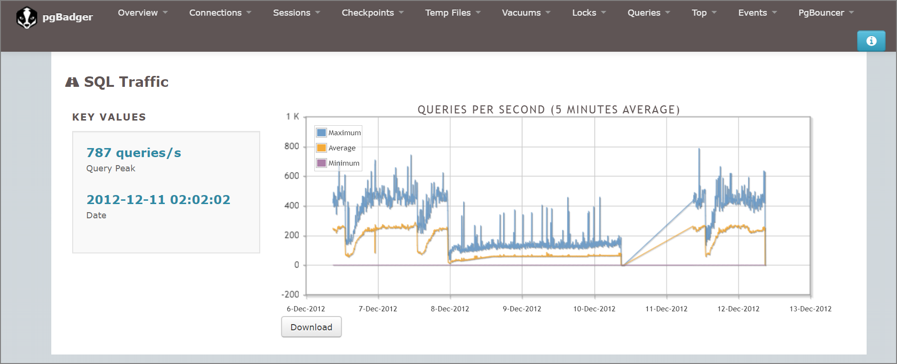
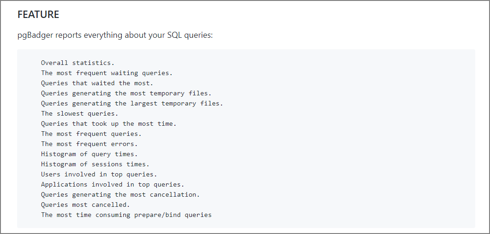

PostgreSQLのログ分析ツール pgBadgerを試す
はじめに
pgBadgerはPostgreSQLのログファイルを解析しレポートを出力するツール。このツールはログを基に分析を行うが、SQL、待機イベント、IO統計、エラー統計、SQLヒストグラム、ロック、Vaccum統計などを多くのワークロードが確認できる。
まず始めにサンプルのレポートを見たい場合はこちら。予想していたよりもグラフィカルに確認できた。

Githubのリポジトリとreadmeはこちら。
darold/pgbadger: A fast PostgreSQL Log Analyzer https://github.com/darold/pgbadger
pgBadgerをEC2インストールすればログを静的に解析できるという点でRDSやAuroraのPostgreSQL互換を対象に実行できるようなので確認してみる。(なお、pgbadgerの実行はEC2上にインストールしたPostgreSQL10.11で実行)
ネイティブツールと外部ツールに基づいた Amazon RDS PostgreSQL のクエリの最適化とチューニング | Amazon Web Services ブログ https://aws.amazon.com/jp/blogs/news/optimizing-and-tuning-queries-in-amazon-rds-postgresql-based-on-native-and-external-tools/
pgBadgerの設定とpostgres.confの設定
インストール
[ec2-user@postdb ~]$ sudo yum install pgbadger
[ec2-user@postdb ~]$ which pgbadger
/usr/bin/pgbadger
[ec2-user@postdb ~]$
postgres.conf
ログに関するパラメータを修正する。デフォルトより多くの情報を出すことになるので注意。
log_filename = 'postgresql-%Y-%m-%d.log'
#指定時間以上のクエリのテキストと実行時間をログに残す。0の場合すべてのクエリが対象になる絞りたい場合は要調整
log_min_duration_statement = 0
log_line_prefix = '%t [%p]: [%l-1] user=%u, db=%d'
# チェックポイントの実行のlogging
log_checkpoints = on
# クライアントの接続のlogging
log_connections = on
# クライアントの切断のlogging
log_disconnections = on
# deadlock_timeout で指定した時間（デフォルト1秒）以上のロック待ちをログに残す
log_lock_waits = on
#指定したサイズ以上の一時ファイルが作成された場合ログに記録
log_temp_files = 0
lc_messages = 'C'
log_autovacuum_min_duration = 0
log_error_verbosity = default
実行コマンド
/usr/bin/pgbadger -f '%t [%p]: [%l-1] user=%u, db=%d' -I -q /var/lib/pgsql/10/data/log/postgresql-2019-12-30.log -O /var/lib/pgsql/pgbadger/
取得できる情報
時間帯別統計や待機が多いSQLクエリ、実行回数の多いクエリ、平均実行時間が長いクエリランキングなどが確認できる。サンプルのレポートを見たい場合はこちら。

その他の機能
- 自動増分レポートモード（incrementalオプションを指定してcron実行）
- 月次レポート
- 並列処理